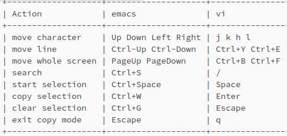

При первом запуске tmux создается сервер, который действует как оркестратор для будущих экземпляров. Конечно, он также создает клиент, через который мы можем взаимодействовать с сервером. Когда мы выполняем tmux без подкоманд, мы немедленно получаем три элемента по порядку:
По умолчанию tmux называет сессии последовательными номерами. Тем не менее, мы также можем использовать подкоманду new-session в сочетании с флагом [-s] ession, чтобы присвоить сеансу конкретное имя.
Независимо от этого, сеанс содержит по крайней мере одно окно, которое содержит по крайней мере одну панель.
Таким образом, если мы уничтожаем единственную панель последнего окна сеанса, мы фактически уничтожаем сеанс.
С другой стороны, если мы разделяем окно более чем на одну панель, только tmux знает об этом виртуальном разделении. Для самого эмулятора терминала эти границы являются обычными символами, такими же, как и для любой другой части терминала.
После перехода в режим копирования, клавиши навигации и действия, которые мы можем использовать, зависят от текущей схемы ключей. Возможны два варианта: emacs и vi. Узнать какая схема: tmux show-options -g | grep status-keys
У меня emacs.
setw -g mode-keys vi
Эта команда устанавливает vi в качестве схемы по умолчанию для сеанса tmux. Чтобы убедиться, что он остается настроенным, мы также можем добавить его в соответствующий файл .tmux.conf.
Основные клавиши режима копирования

После копирования выделенного элемента мы выходим из режима копирования и вставляем с помощью Ctrl + B, за которым следует [, т.е. Ctrl + B и [.
Пример для режима emacs:
---------------------------------------------------------------------------------------
Создание и управление сеансами
Настройка tmux
Файл конфигурации tmux находится в домашней директории и называется .tmux.conf.
Вы можете настроить внешний вид, горячие клавиши и другие параметры, которые упростят вашу работу.
Префикс (с него начинаются команды): Ctrl + b
Новое окно (нажать CTRL+b, затем нажать с)
Префикс + c
Список окон
Префикс + w // переключиться курсором вверх-вниз
Переключение
Префикс + n // следующее окно
Префикс + p // предыдущее окно
Префикс + 0 // переключиться на окно №0
Переход между панелями
Префикс + стрелки курсора // либо режим мыши
Изменение размеров панелей
Префикс + c-стрелки // либо режим мыши
Закрытие окон
Префикс + x // нужно подтвердить y
либо # exit
Отключение от сессии
Чтобы отключиться от сессии tmux и оставить ее запущенной в фоновом режиме, выполните следующую комбинацию клавиш:
Ctrl + b, затем d.
Эта команда переместит вас из сессии tmux в оболочку, а tmux останется запущенным в фоновом режиме.
либо # tmux detach
Список сессий
# tmux ls
Подключиться к работающей сессии
# tmux attach //подключение к сессии, либо к единственной, либо последней созданной
# tmux attach -t session1 // подключение к сессии session1
Выбрать сессию
Префикс + s
Завершение сессии
Если же вы хотите завершить сессию tmux полностью, нажмите `Ctrl + b` затем введите команду `:kill-session`. Таким образом, вы завершите все окна и панели, связанные с этой сессией Tmux.
# tmux kill-session -t session1
Завершить все сессии
# tmux kill-server
Список поддерживаемых комманд
# tmux list-commands
Далее чтобы разделить терминал на две панели горизонталью, нажимаю Ctrl+b (префикс) и после " (Shift+")
Можно разделить терминал на две панели вертикалью: префикс и после %
Или разделить на два окна: префикс и после с
Но больше нравится вариант с двумя панелями, разделенные горизонталью.
Чтобы подправить соотношение размеров панелей по высоте, используем: префикс, Alt+↑ (если поднять горизонталь) или ↓ (если опустить).
Чтобы перейти на верхнюю панель, нажимаем префикс и после ↑
Наоборот если перейти на нижнюю панель, то: префикс и далее ↓
Закрыть панель, команда: exit
Закроем единственную панель, автоматически выходим из tmux: exit